Marca PhaifferTech
Versão vetorial do logotipo, redesenhada a partir das imagens atuais. Nada aqui está no site ainda: esta página serve para você aprovar ou pedir ajustes.
1. Antes e depois
Em cima, o PNG atual. Embaixo, o vetor. O símbolo segue a geometria do symbol.png (o ícone do site), e as letras são da fonte Readex Pro, a mais próxima das letras geradas pelo ChatGPT.
Atual (imagem) Vetor
Vetor
2. Logotipo
A versão para fundo claro usa as cores do símbolo: navy para o negócio, azul para a tecnologia.
logo-corlogo-clarologo-navylogo-branco3. Símbolo
simbolo-cor
simbolo-clarosimbolo-navy
simbolo-brancoTamanhos pequenos (ícone de aba, avatar):
4. Fonte das letras
Comparei 40 fontes gratuitas com as letras do logo, letra a letra. A Readex Pro (peso 600) foi a mais parecida e está no vetor. As outras ficam como referência. A Manrope continua sendo a fonte do texto do site.
PhaifferTechReadex Pro 600 · escolhida (87,8% de semelhança)
PhaifferTechLexend 650 · 86,0%
PhaifferTechPlus Jakarta Sans 800 · 78,4%
PhaifferTechManrope 800 (texto do site) · 75,8%
5. Cores
Navy · negócio
#0B2945
RGB 11 41 69
#0B2945
RGB 11 41 69
Azul · tecnologia
#0879E3
RGB 8 121 227
#0879E3
RGB 8 121 227
Fundo claro
#F7F6F2
RGB 247 246 242
#F7F6F2
RGB 247 246 242
6. Regras de uso
- Deixe ao redor do logo um espaço livre de pelo menos a altura do "P".
- Tamanho mínimo: 120 px de largura no digital (3 cm impresso). Abaixo disso, use só o símbolo.
- Fundo claro:
logo-cor. Fundo escuro:logo-claro. Foto ou cor forte:logo-branco. - Não esticar, girar, trocar as cores das peças, aplicar sombra ou contorno.
- Use o SVG sempre que possível (site, gráfica, apresentações). Use o PNG em e-mail, Word e redes sociais.